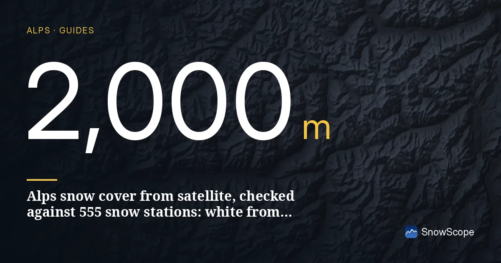
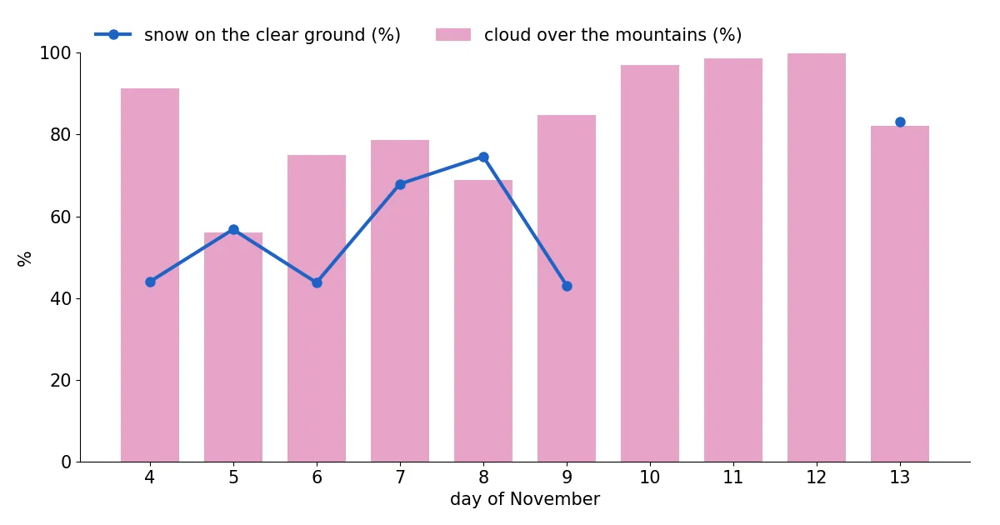
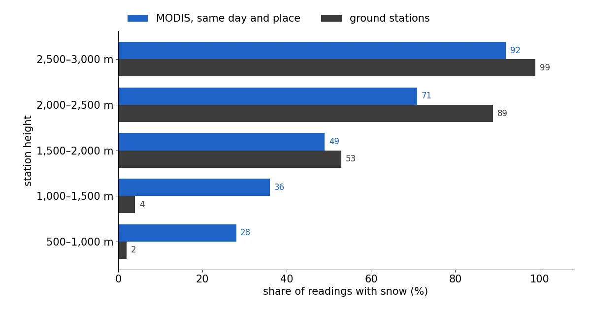
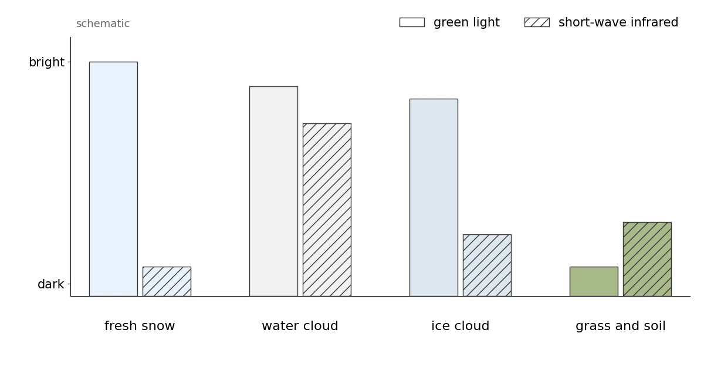

Alps snow cover from satellite, checked against 555 snow stations: white from about 2,000 m (13 November 2026)
On 13 November 2026, two ways of reading Alpine snow tell different stories below 1,500 m. We checked the two against each other across the whole Alpine arc—Switzerland, Austria, South Tyrol, Trentino and France—to work out which one to trust when they disagree.
See the live snow forecast for Alps in the SnowScope appSnow depth, powder alerts and the 3D map, free.

Clouds ruled the first ten days
Between 4 and 13 November, clouds blanketed almost all the Alps almost all the time. On 4 November cloud covered 91 % of the mountains; on 10 November, 97 %; on 12 November, 100 %. Only 5 November was partly clear, with 56 % cloud. This makes a single day's picture useless.
To get around this, we took the most recent clear look at each patch of ground across all ten days. That means 18 % of the mountains were last seen on 13 November itself, 21 % on 8 November and 10 % on 5 November.

What the satellite counted as snow
MODIS saw the most recent clear ground on about 95,000 km² of the Alps above 1,000 m. Of that, 66 % looked white and 34 % looked bare. Snow coverage climbs steeply with height: 48 % of the ground between 1,000 and 1,250 m, 68 % between 1,750 and 2,000 m, 79 % between 2,000 and 2,250 m, and 95 % between 2,500 and 2,750 m. By this reading, the snow line sits around 1,200 m.
But higher is more trustworthy. Above 2,000 m that rises to 88 %. These figures are in line with what the stations measured.
What 555 ground stations said
Between 4 and 13 November we collected 992 readings from stations in Switzerland (SLF network, 130 stations), Austria (GeoSphere, 197), Tyrol, South Tyrol and Trentino (Euregio avalanche services, 219), and France (Météo-France, 9). Every time a station took a reading on the same day that MODIS had a clear view of its pixel, we compared the two. They agreed 69.5 % of the time overall—but that average hides a big pattern.
Below 1,500 m, the snow map saw snow far more often than the stations measured it. Between 500 and 1,000 m, MODIS counted snow on 28 % of the matches but stations had snow on only 2 %. Between 1,000 and 1,500 m it was 36 % against 4 %. Between 1,500 and 2,000 m the two are closer: 49 % versus 53 %. Higher up, it is MODIS that falls behind: 71 % against 89 % between 2,000 and 2,500 m, and 92 % against 99 % above 2,500 m.

Why the snow map saw phantom snow lower down
The 'snow' MODIS showed on low ground north of the Alps was not there. Sixty stations below 750 m had no snow on 12 November; 61 had none on 9 November. So the SnowScope map now excludes ground below 1,000 m to avoid this false positive.
Why does it happen? Thin or broken cloud that slips through the cloud mask, valley fog, and pixels that straddle snow and bare ground are all likely culprits. The MODIS product guide itself lists cloud and snow confusion as the algorithm's main known weakness. The stations agree on a sharper snow line. On 12 November, 15 of 40 stations between 1,500 and 1,750 m had snow, 24 of 51 between 1,750 and 2,000 m, 60 of 96 between 2,000 and 2,250 m and 61 of 62 above 2,500 m.
What forecasters and local reports said on the ground
Weather services and local journalists on 4 to 12 November told the same story: snow was scarce and high. Watson.ch on 6 November said the freezing level would stay around 2,000 m and only parts of Valais held about half a metre, still below average. Andrea Vuolo reported for Il Dolomiti on 4 November about 20 cm of fresh snow around 2,000 m in Piedmont, with flakes reaching about 1,000 m in the heaviest showers. By 7 November, RaiNews showed the first flakes down to 800 m in Piedmont, still exceptional.
The change arrived at the edge of our window. The Tiroler Tageszeitung on 12 November forecast a drop in the snow line below 1,000 m on 13 November, with up to 30 cm higher up. 20 Minuten expected 2 to 8 cm of new snow above about 1,500 m in the night to 13 November.

How snow and cloud look from space
Fresh snow is one of the brightest things on Earth in green light, but in short-wave infrared around 1.6 micrometers it turns dark, because ice absorbs strongly at that wavelength. Most clouds made of water droplets stay bright in both. The MODIS algorithm uses this contrast: the Normalized Difference Snow Index compares green and infrared brightness to flag likely snow.
The algorithm screens out doubtful cases, but it has blind spots. Thin or broken cloud can pass as clear sky. Clouds with ice crystals at high altitude can look like snow. Dense forest hides snow underneath. The low November sun and steep mountain shadows also weaken the signal.
Tips for skiers
- Below 1,500 m in early November, treat a satellite map alone as a rough guide only: check a webcam or a station reading before choosing a slope.
- Pink areas on the SnowScope map were under cloud every day this period: use the official avalanche bulletin and local webcams for those valleys.
- On 13 November a cold front was forecast to drop the snow line fast.
- High up, above 2,000 m, satellite and stations agree well: snow depth is easier to judge there from the map alone.
- Early-season snow is often thin. Where the map shows snow but the depth is not yet measured, probe or check a report before trusting the cover.
About these numbers
Resort snow depths are the deepest snow on the resort's upper slopes on the date shown; they are estimates for an area, not a measurement at one point. Forecasts can change. Always read the official avalanche bulletin before going off-piste.
Cite this report
For research, teaching or the press: the numbers and charts are free to reuse under CC BY 4.0 with this citation.
SnowScope (2026), Alps snow cover from satellite, checked against 555 snow stations: white from about 2,000 m (13 November 2026), https://snowscope.app/blog/en/2026/11/alps-snow-cover-satellite-modis-13-november-2026.html, accessed 2026-11-13
SnowScope (Atlas Labs). (2026, November 13). Alps snow cover from satellite, checked against 555 snow stations: white from about 2,000 m (13 November 2026). SnowScope snow reports. https://snowscope.app/blog/en/2026/11/alps-snow-cover-satellite-modis-13-november-2026.html
BibTeX
@misc{snowscope2026alpssnowcoversatellitemo,
author = {{SnowScope (Atlas Labs)}},
title = {Alps snow cover from satellite, checked against 555 snow stations: white from about 2,000 m (13 November 2026)},
year = {2026},
month = nov,
howpublished = {\url{https://snowscope.app/blog/en/2026/11/alps-snow-cover-satellite-modis-13-november-2026.html}},
note = {Published 2026-11-13 20:13 UTC; accessed 2026-11-13}
}· CC BY 4.0 · Methods, data and tools →
Follow Alps
Free: a message when fresh snow is coming, and the forecast every morning.
More snow reports

Silvretta Montafon snow conditions on 13 November 2026: 4.5 cm on the top at 2421 m, bare mid-mountain and valley, about 40 cm on the way up high this week while the valley gets rain below 1,500 m.

Les Menuires snow report for 13 November 2026: 28 cm at the top (2838 m), none lying at 2112 m or 1386 m. About 80 cm due at the top in seven days, snow line around 1500 to 1700 m. Why Val Thorens, 450 m higher up the same valley, already has more.

Lech Zürs snow report for 13 November 2026: about 6 cm at the top (2436 m) and at mid-mountain, bare in Lech at 1430 m. This week 42 cm up high on our forecast, up to 91 cm on others, rain and snow mixed around 1400 m. And why Lech is the snowy side of the Arlberg.